Our wedding packages never include hidden fees, rigid hour limits or videographers who turn your day into a stressful production. We don't gatekeep our pricing, we don't watch the clock, and we don't put you into awkward, staged poses. Every package we offer features Full Day Coverage. We arrive when you start getting ready, and we leave when the dance floor gets wild. No rushing, no awkward maths, and no surprise fees.
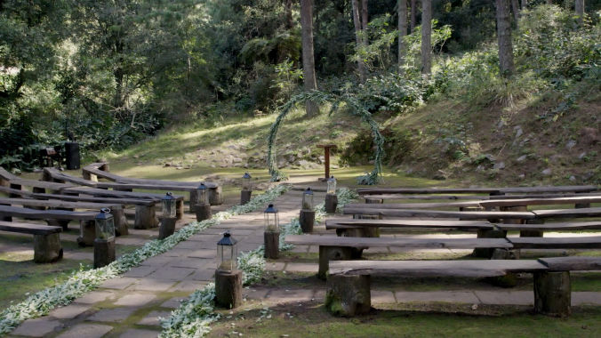
6 minute highlight video
1 or 2 videographers depending on availability
Drone shots if possible
€1600
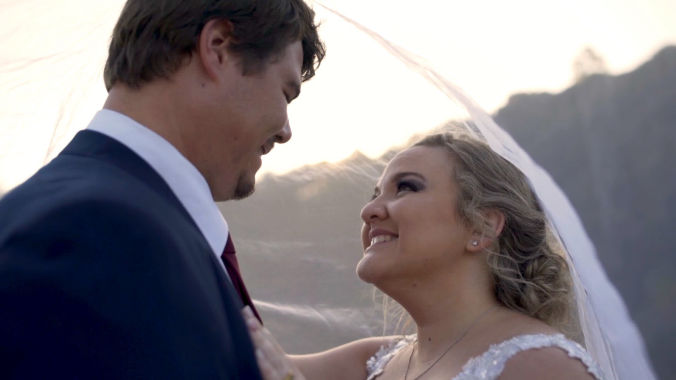
6 minute highlight video
30+ mins
Includes speeches with audio and full ceremony
2 Videographers
Drone shots if possible
€3000
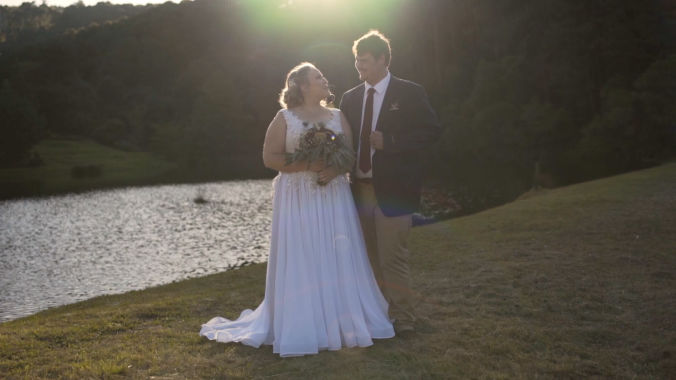
Tailored exactly to your needs, do you want interviews with family members, additional days captured, or maybe portrait videos for sharing on social media.
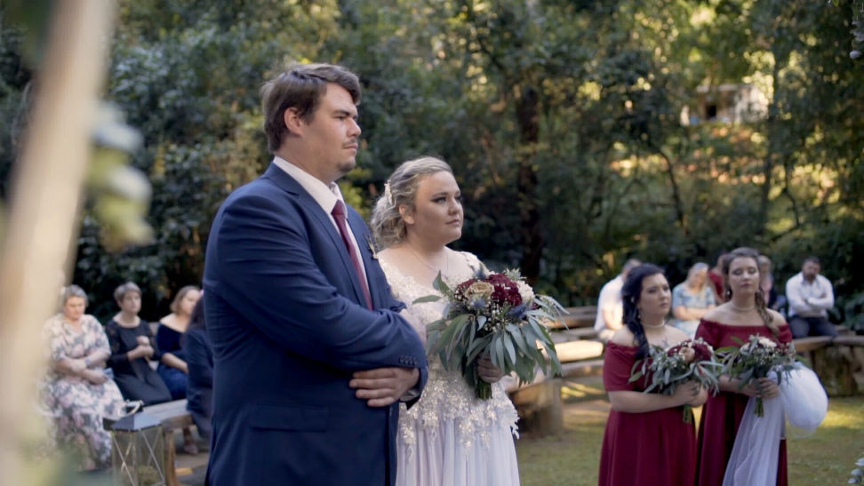
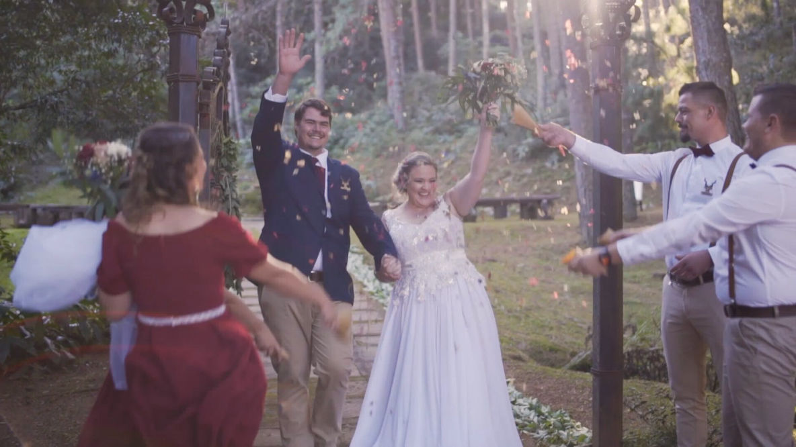
We hate hidden fees as much as you do.
Mainland Portugal: Travel and accommodation are completely included in our package prices for any wedding in mainland Portugal (from the Douro Valley down to the Algarve). No surprise mileage invoices or hotel bills for you to worry about.
Islands & Destination Weddings: For weddings in Madeira, the Azores, or outside of Portugal, we charge a simple, flat-rate travel fee based on current flight and basic lodging costs. We book everything ourselves so you don't have to lift a finger.
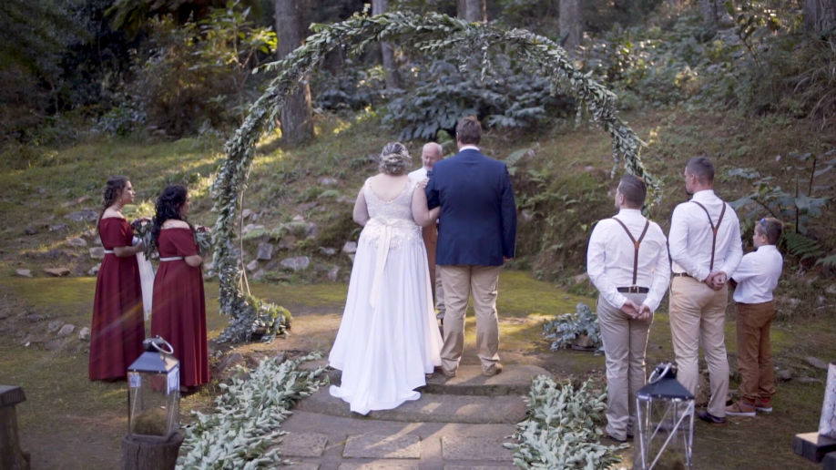
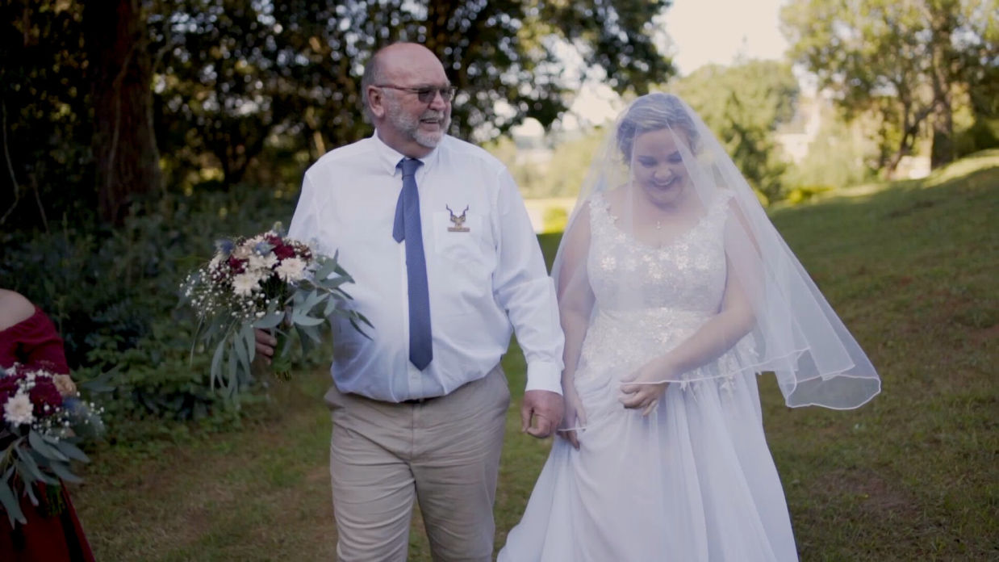
How We Work
Inquiry: Tell us your date and venue. We will confirm our availability and set up a relaxed video chat to make sure we are a good fit.
Booking: Secure your date with a signed agreement and a 50% booking deposit.
On The Day: We arrive quietly, blend into your guest list, and let you experience your day naturally. No cheesy staging, no massive equipment, just real life.
Delivery: Highlight videos arrive in 4 weeks and the full coverage film in 8 weeks.
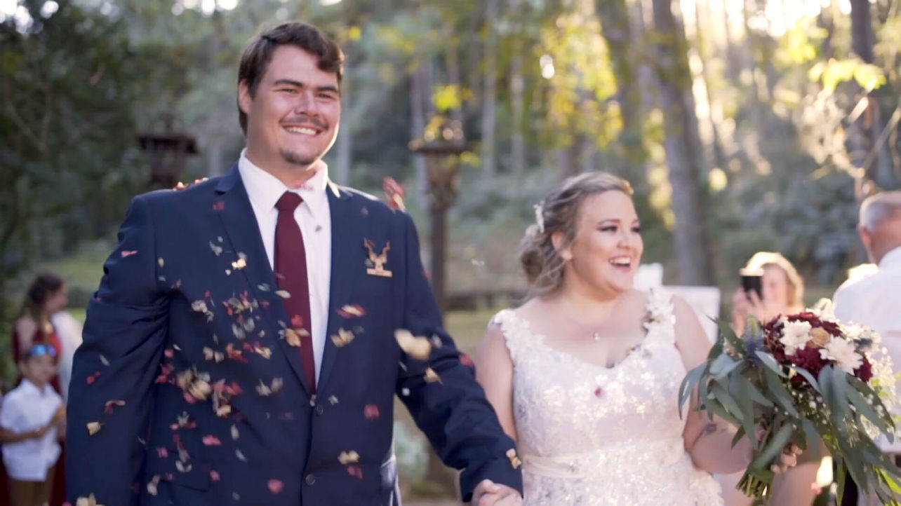
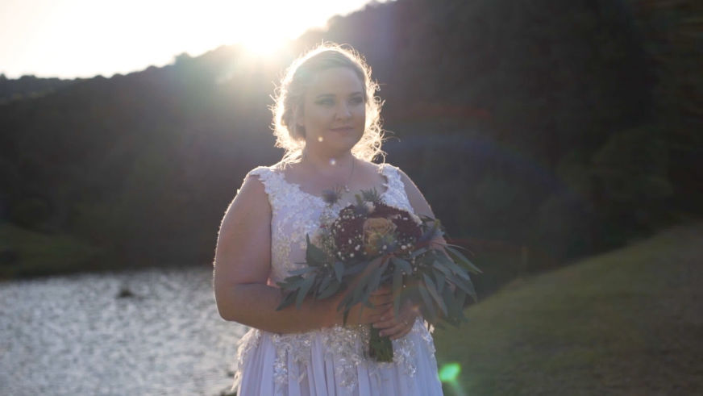
If you are looking for an experienced video team to quietly capture your day we would love to hear from you.
katy@munjiri.com
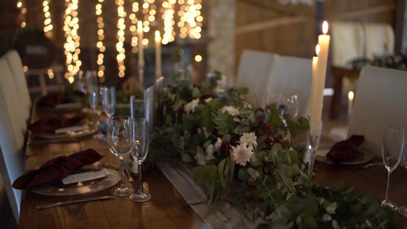
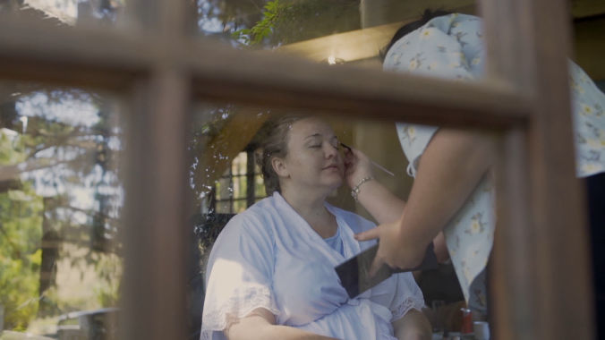
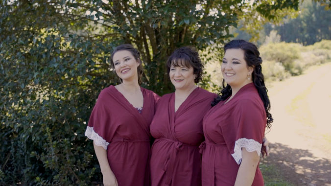